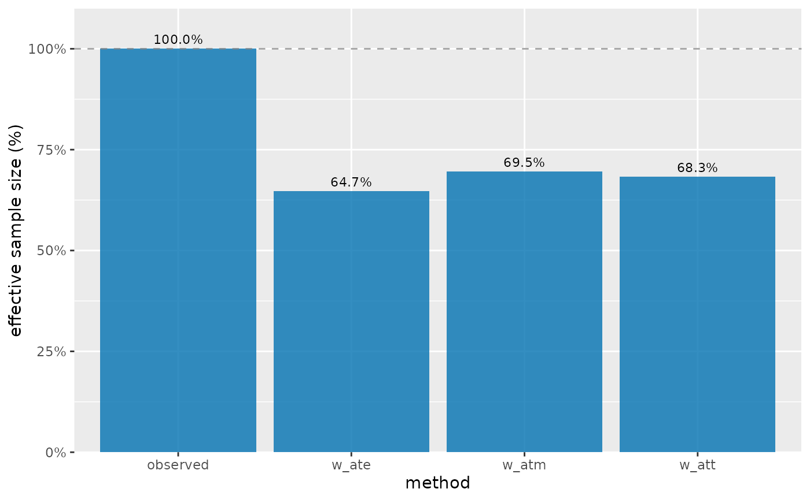
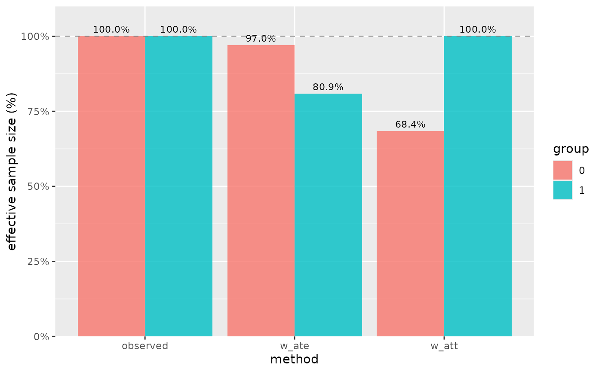
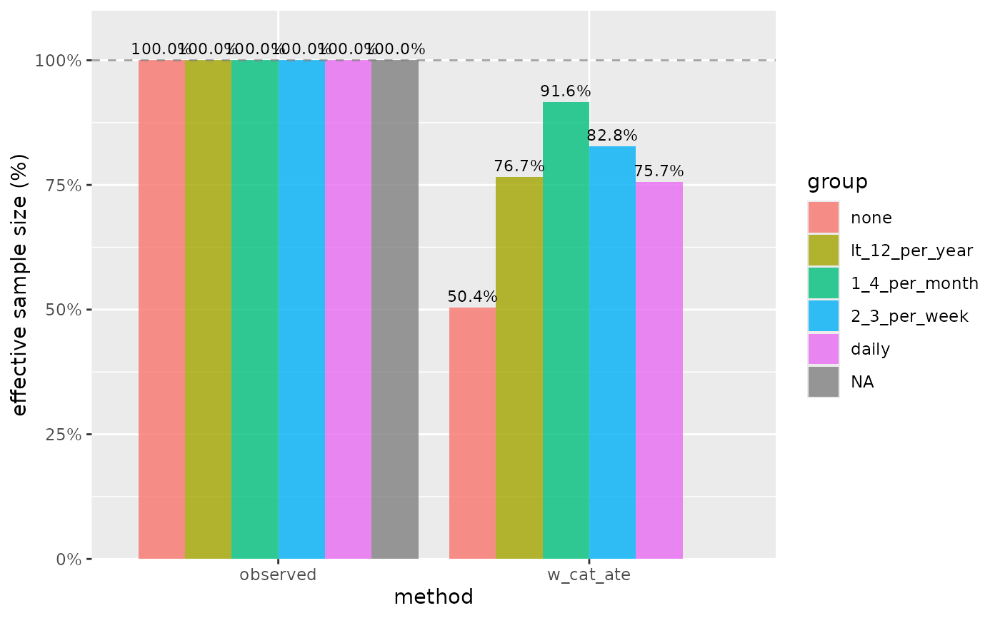
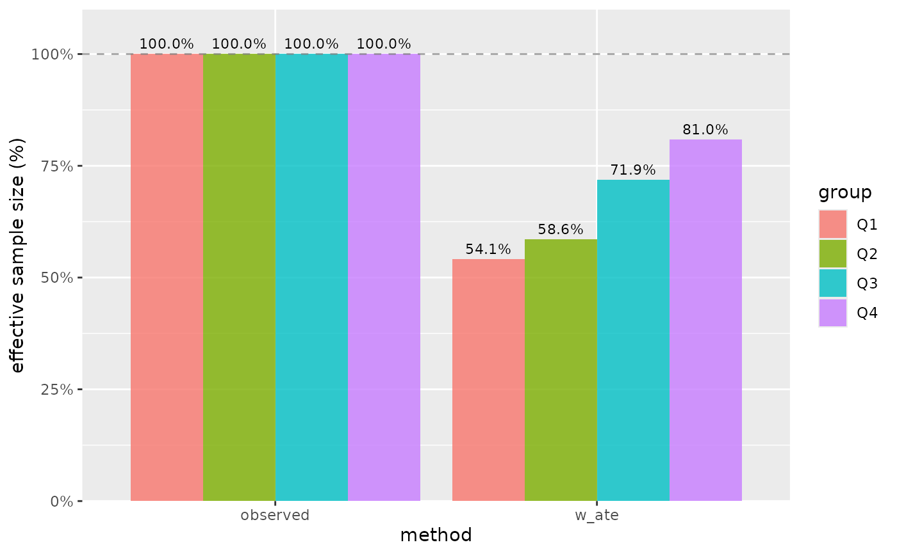
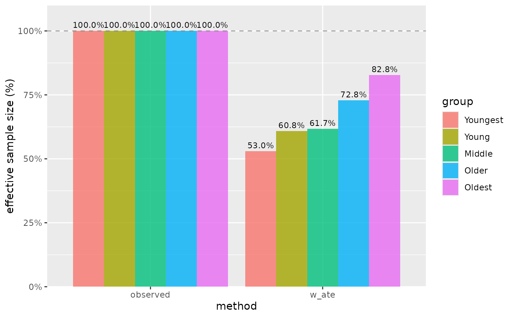
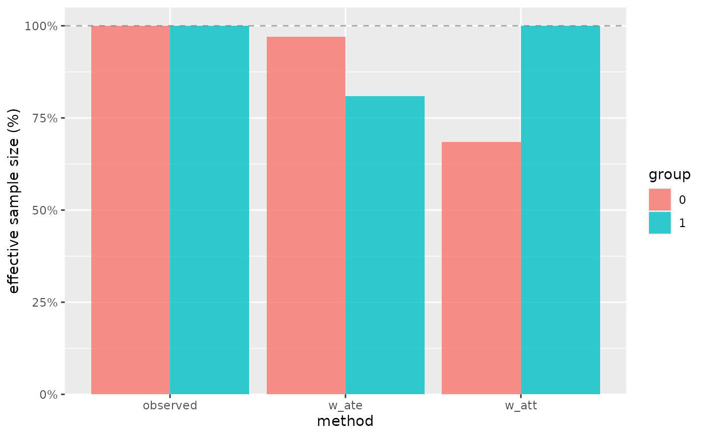
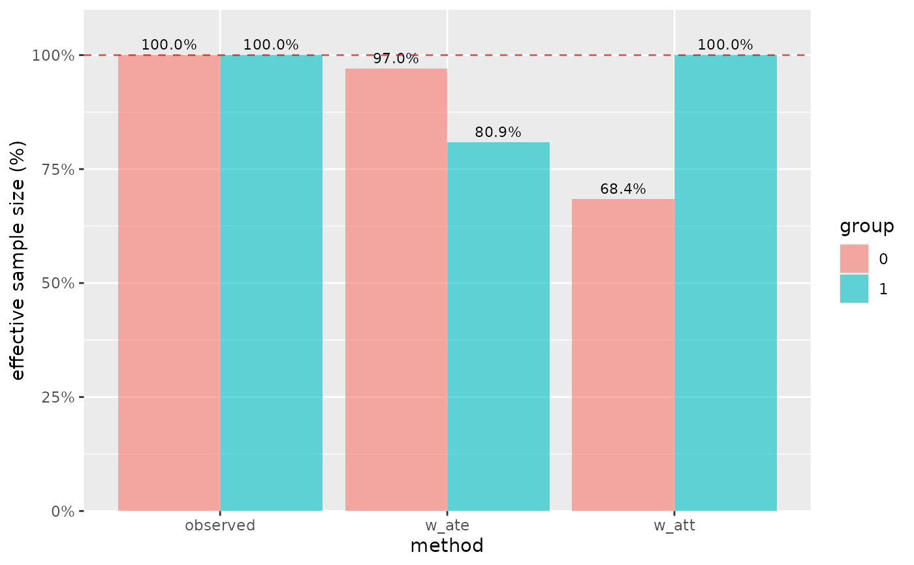
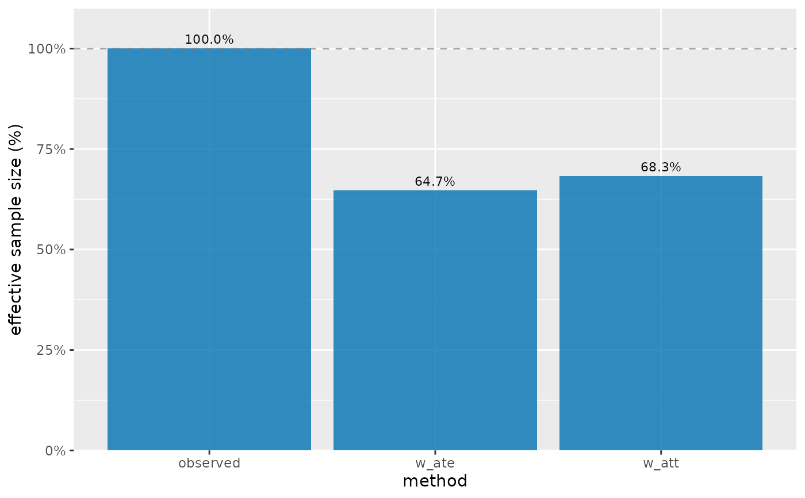

Creates a bar plot visualization of effective sample sizes (ESS) for different weighting schemes. ESS values are shown as percentages of the actual sample size, with a reference line at 100% indicating no loss of effective sample size.
Usage
plot_ess(
.data,
.wts = NULL,
.group = NULL,
include_observed = TRUE,
n_tiles = 4,
tile_labels = NULL,
fill_color = "#0172B1",
alpha = 0.8,
show_labels = TRUE,
label_size = 3,
percent_scale = TRUE,
reference_line_color = "gray50",
reference_line_type = "dashed"
)Arguments
- .data
A data frame, either:
Output from
check_ess()containing ESS calculationsRaw data to compute ESS from (requires
.wtsto be specified)
- .wts
Optional weighting variables. Can be unquoted variable names, a character vector, or NULL. Multiple weights can be provided to compare different weighting schemes.
- .group
Optional grouping variable. When provided, ESS is calculated separately for each group level. For continuous variables, groups are created using quantiles.
- include_observed
Logical. If using
.wts, also calculate observed (unweighted) metrics? Defaults to TRUE.- n_tiles
For continuous
.groupvariables, the number of quantile groups to create. Default is 4 (quartiles).- tile_labels
Optional character vector of labels for the quantile groups when
.groupis continuous. If NULL, uses "Q1", "Q2", etc.- fill_color
Color for the bars when
.groupis not provided. Default is "#0172B1".- alpha
Transparency level for the bars. Default is 0.8.
- show_labels
Logical. Show ESS percentage values as text labels on bars? Default is TRUE.
- label_size
Size of text labels. Default is 3.
- percent_scale
Logical. Display ESS as percentage of sample size (TRUE) or on original scale (FALSE)? Default is TRUE.
- reference_line_color
Color for the 100% reference line. Default is "gray50".
- reference_line_type
Line type for the reference line. Default is "dashed".
Details
This function visualizes the output of check_ess() or computes ESS directly
from the provided data. The plot shows how much "effective" sample size remains
after weighting, which is a key diagnostic for assessing weight variability.
When .group is not provided, the function displays overall ESS for each
weighting method. When .group is provided, ESS is shown separately for each
group level using dodged bars.
For continuous grouping variables, the function automatically creates quantile groups (quartiles by default) to show how ESS varies across the distribution of the continuous variable.
Lower ESS percentages indicate:
Greater weight variability
More extreme weights
Potentially unstable weighted estimates
Need for weight trimming or alternative methods
See also
check_ess() for computing ESS values, ess() for the underlying calculation
Examples
# Overall ESS for different weighting schemes
plot_ess(nhefs_weights, .wts = c(w_ate, w_att, w_atm))

# ESS by treatment group (binary exposure)
plot_ess(nhefs_weights, .wts = c(w_ate, w_att), .group = qsmk)

# ESS by treatment group (categorical exposure)
plot_ess(nhefs_weights, .wts = w_cat_ate, .group = alcoholfreq_cat)
#> Warning: Removed 1 row containing missing values or values outside the scale range
#> (`geom_col()`).
#> Warning: Removed 1 row containing missing values or values outside the scale range
#> (`geom_text()`).

# ESS by age quartiles
plot_ess(nhefs_weights, .wts = w_ate, .group = age)

# Customize quantiles for continuous variable
plot_ess(nhefs_weights, .wts = w_ate, .group = age,
n_tiles = 5, tile_labels = c("Youngest", "Young", "Middle", "Older", "Oldest"))

# Without percentage labels
plot_ess(nhefs_weights, .wts = c(w_ate, w_att), .group = qsmk,
show_labels = FALSE)

# Custom styling
plot_ess(nhefs_weights, .wts = c(w_ate, w_att), .group = qsmk,
alpha = 0.6, fill_color = "steelblue",
reference_line_color = "red")

# Using pre-computed ESS data
ess_data <- check_ess(nhefs_weights, .wts = c(w_ate, w_att))
plot_ess(ess_data)

# Show ESS on original scale instead of percentage
plot_ess(nhefs_weights, .wts = c(w_ate, w_att), percent_scale = FALSE)